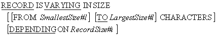

COBOL programs normally process fixed-length records but sometimes files contain records of
different lengths. For instance, the transaction file introduced in the first section, contains
three different types of fixed-length record and an ordinary text file contains records whose
size is differs from record to record.
This section demonstrates how files, containing variable-length records, may be declared and
processed.
The File Description (FD) entry was introduced in the first tutorial on Sequential files. But
the entry shown in that tutorial was very simple; it consisted of the letters FD followed by the
filename. An FD entry can be more complicated than this, and can have a large number of
subordinate clauses (see your vendor manual or help files). Among these clauses is the
RECORD IS VARYING IN SIZE clause.
The RECORD IS VARYING IN SIZE clause allows us to specify
that a file contains variable length records. The syntax diagram for this clause is shown below.

Notes
The RECORD IS VARYING IN SIZE clause, without the
DEPENDING ON phrase, is not strictly required because the
compiler can this information out from the record sizes. That is why it was not included in the
multiple record-type declarations in the first section.
The RecordSize#i in the DEPENDING ON phase must be an
elementary unsigned integer data-item declared in the
WORKING-STORAGE SECTION.
Examples
FD TransFile
RECORD IS VARYING IN SIZE
FROM 8 TO 31 CHARACTERS.
FD Stringfile
RECORD IS VARYING IN SIZE
FROM 1 TO 80 CHARACTERS
DEPENDING ON StringSize.
When a record is read from a file, defined with the
RECORD IS VARYING IN SIZE.. DEPENDING ON phrase, the size of
the record read into the buffer is moved into the data-item RecordSize#i (see the example
program below).
To write to a file, defined with the
RECORD IS VARYING IN SIZE.. DEPENDING ON phrase, the size of
the record to be written must first be moved to RecordSize#i data-item, and then the
WRITE statement must be executed.
The example program below introduces and number of new techniques and concepts;
-
The filenames we have used so far have been defined at compile-time. In this example we see
how we can set up a file so that the file name is accepted from the user at run-time.
-
This program demonstrates variable-length records that are defined both with, and without,
the
DEPENDING ON clause.
-
This program demonstrates how condition names set on the transaction type code can be used
to discover which type of transaction has been read into the record buffer. Notice how
reading a record into the record buffer automatically sets one of the condition names to
true.
-
This program uses Reference Modification to display the variable-length string that has been
read into the record buffer. The form
StringRec(1:StringSize) extracts the characters in StringRec, from the character at
position 1, to the character at position StringSize.
>>SOURCE FORMAT IS FREE
IDENTIFICATION DIVISION.
PROGRAM-ID. VarLenRecs.
AUTHOR. Michael Coughlan.
*> This program uses variable length records.
*> It demonstrates how condition names may be used to
*> discover which type of record is in the record buffer.
*> It shows how a file name may be assigned to a file
*> at run time rather than compile time.
*> It uses Reference Modification to extract the input
*> string from the record buffer.
ENVIRONMENT DIVISION.
INPUT-OUTPUT SECTION.
FILE-CONTROL.
SELECT StringFile
ASSIGN TO StringFileName
ORGANIZATION IS LINE SEQUENTIAL.
SELECT TransFile
ASSIGN TO "TRANS.DAT"
ORGANIZATION IS LINE SEQUENTIAL.
DATA DIVISION.
FILE SECTION.
FD TransFile
RECORD IS VARYING IN SIZE
FROM 8 TO 31 CHARACTERS.
01 InsertRec.
88 EndOfTrans VALUE HIGH-VALUES.
02 TransCode PIC X.
88 DoInsert VALUE "I".
88 DoDelete VALUE "D".
88 DoUpdate VALUE "U".
02 StudentId PIC 9(7).
02 StudentName.
03 Surname PIC X(8).
03 Initials PIC XX.
02 DateOfBirth.
03 YOBirth PIC 9(4).
03 MOBirth PIC 99.
03 DOBirth PIC 99.
02 CourseCode PIC X(4).
02 Gender PIC X.
01 DeleteRec.
02 FILLER PIC X(8).
01 UpdateRec.
02 FILLER PIC X(8).
02 NewCourseCode PIC X(4).
FD Stringfile
RECORD IS VARYING IN SIZE
FROM 1 TO 80 CHARACTERS
DEPENDING ON StringSize.
01 StringRec PIC X(80).
88 EndOfStrings VALUE HIGH-VALUES.
WORKING-STORAGE SECTION.
01 StringSize PIC 99.
01 StringFileName PIC X(20).
PROCEDURE DIVISION.
Begin.
DISPLAY "Enter the name of the string file :- "
WITH NO ADVANCING
ACCEPT StringFileName.
OPEN INPUT StringFile.
OPEN INPUT TransFile.
READ TransFile
AT END SET EndOfTrans TO TRUE
END-READ
PERFORM DisplayTransactions
UNTIL EndOfTrans
READ StringFile
AT END SET EndOfStrings TO TRUE
END-READ
PERFORM UNTIL EndOfStrings
DISPLAY "Valid Rec - " StringRec(1:StringSize) "***"
READ StringFile
AT END SET EndOfStrings TO TRUE
END-READ
END-PERFORM
CLOSE StringFile, TransFile.
STOP RUN.
DisplayTransactions.
EVALUATE TRUE
WHEN DoInsert DISPLAY "Insert - " InsertRec
WHEN DoDelete DISPLAY "Delete - " DeleteRec
WHEN DoUpdate DISPLAY "Update - " UpdateRec
WHEN OTHER DISPLAY "Error - " InsertRec
END-EVALUATE
READ TransFile
AT END SET EndOfTrans TO TRUE
END-READ.